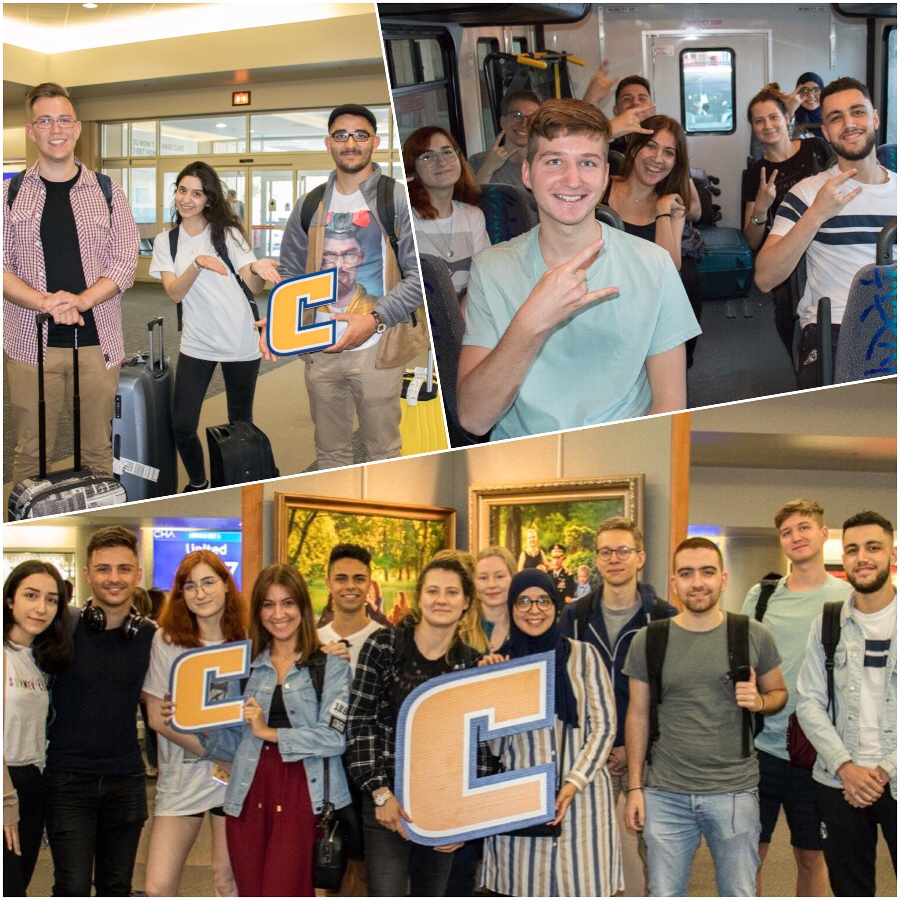
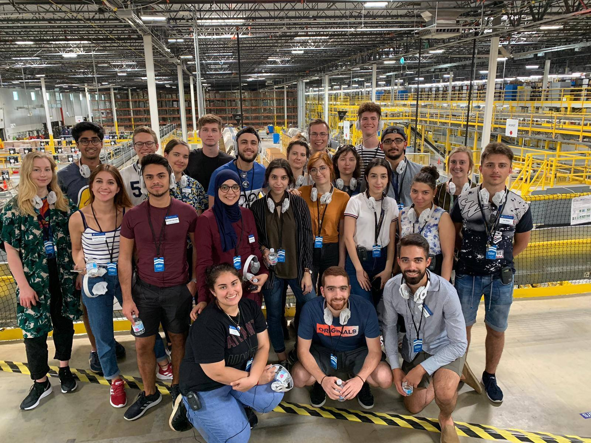
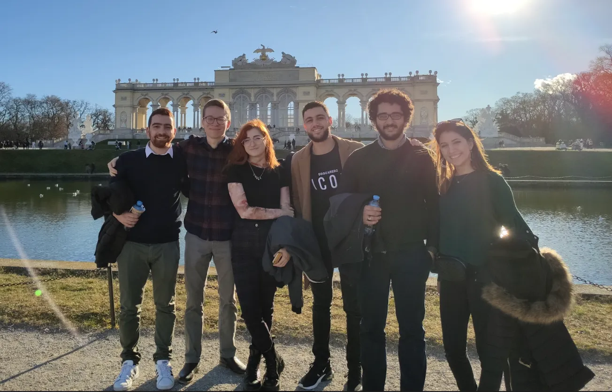

SUSI Entrepreneurship Program: A Free Ticket to an American Dream
My experience from the Study of the US Institutes for Student Leaders Program at University of Tennessee Chattanooga.

Study of the US Institutes for Student Leaders is an intensive academic program for undergraduate students from Europe. I was a part of the Entrepreneurship and Economic Development 2019 cohort which took place in Tennessee, Chattanooga. Twenty (20) Students from seventeen (17) different European countries were selected for this program. We spent five weeks in the United States getting a deeper understanding of American culture, business environment in social and corporate settings, and enhancing our leadership skills. New friends, entrepreneurial exposure, business visits, US cultural learning, and travel experiences, and the opportunity to get funding for future projects on the benefits side, PLUS all of these for $0 dollars! On the cost side, only opportunity cost.
About the program
When I first came across the program, I read about the opportunity and I got excited about the potential learnings. I would have the opportunity to visit new places, spend my summer in a purposeful way learn about economic development, AND make new friends and experiences. Then, I also realized that the program would pay for ALL my travel and living expenses for five weeks in the U.S. It was an opportunity I couldn’t pass up!
Selection process
Put in effort in the application because the return is too good to be true, but it is! First, you need to submit your application through the link from the US Embassy’s post. For this step, you need to make a compelling case for why you are the right fit for the program. Focus on the application description criteria. In the motivation section, try not to recycle your resume (they already have it), but focus on your motivation. The selection committee wants to nominate someone that is very active within and outside the university, has leadership skills and potential, and is curious to learn about the US culture.
If you are selected for the interview congrats! Now you are being tested in two things: 1) your ability to communicate in english, 2) your stories that show you are the right fit — leadership skills, activity outside school, curiosity, and interest in the program. An important thing to note here, no matter how well you do, the selection committee will be the one that gets to choose and you will be compared with other candidates. In other words, not everything is in your control. So my advice here is to try to focus on how you can perform your best, as it is the only thing that is in your hands and can maximize your likelihood of getting nominated.
Experience
A typical weekday
Early in the mornings, from 8 to 11 am, we had classes about management, entrepreneurship, and inclusion and diversity where before each class each one of us had to present something in the class. Then we were having lunch in the university’s dining hall. Every day we had an abundant buffet of every food you can imagine; from burgers, chicken nuggets, and pizzas, to salmon, salads, fruits, waffles, and frozen yogurt.
After lunch, we were had visits in companies and NGOs near the area. The company visit could have been anything from a small social enterprise, to a large multinational conglomerate. We were meeting chief executives and people from the team that were presenting us the ways that their company runs and its culture. Our schedule continued with activities which were either another visit excursion to a company or a cultural/bonding activity such as bowling, going sightseeing in the town, volunteering at an NGO, etc.
In the evening we had the option to eat dinner wherever we preferred. The program included allowance every week for us to spend which was more than enough to eat at a mid-range restaurant every day or cook at home and save more money for shopping and doing other activities.
 You can hereby see the schedule of SUSI 2018 — one year before my cohort — each year is different, and better in my opinion, but the core concept stays the same.
Besides Chattanooga, we also visited other cities such as Nashville, and Atlanta. During the last week of our program, we spent 3 days in New York City, visiting companies and exploring the city. The last three days, we spent in Washington DC, where we presented our business idea to FHI360 headquarters (the NGO under the US State Department program was organized).

Living 5 weeks in the US with the same people made everyone to come closer to each other. During SUSI I have made some really good friends in Europe whom I am glad to host anytime in Cyprus and I know that every time I will be in their country I will have someone to hang out with.
Please clap 👏 on this on medium if you find this post helpful:)